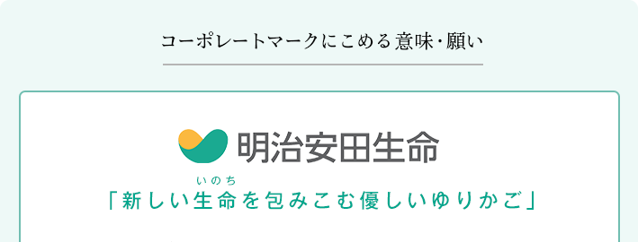

私たちは生命保険事業のパイオニアとして、相互扶助の精神を貫くとともにお客さまを大切にする会社に徹し、生命保険を中心にクオリティの高い総合保障サービスを提供し、確かな安心と豊かさをお届けいたします。

人生は「ゆりかご」からスタートし、お客さまと生命保険との関わりもここから始まります。
私たち明治安田生命が大切にしなければならないことは、思いやり、優しい心、
そして、お客さまの立場にたった温かいサービスです。
それは、まさしく「新しい生命(いのち)を包みこむ優しいゆりかご」のように、
お客さま一人ひとりをお守りすることといえます。
こうした想いを、ハートも連想できる柔らかい曲線で表現し、
お客さまを温かく包みこむ明治安田生命の姿をイメージしています。
また、成長のシンボルである「若葉」にもつながるように、緑と黄色を組み合わせ、
若々しい会社を表現しています。
さらに、無限大(∞)を想起させるデザインには、お客さまとの心のこもったお付き合いを育み、
お客さまとともに無限に成長しつづける私たちでありたいという願いもこめられています。